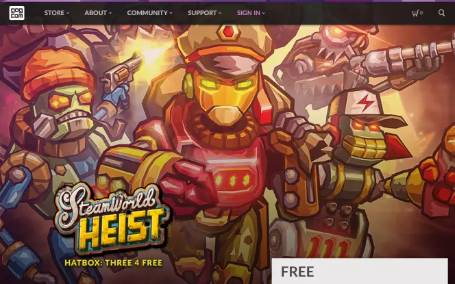

Steam
O Steam tinha que ser o campeão indiscutível de sites confiáveis para baixar jogos completos de PC grátis para Windows 7, 10 e até mesmo Mac. O Steam tem ocupado a posição por mais de 13 anos e ainda continua sendo o melhor site de download de jogos grátis até o momento. Seja se divertir sozinho ou compartilhar com seus amigos, o Steam tem uma ampla gama de jogos grátis para você durante todo o ano. Aqui, você pode encontrar de tudo, desde jogos de ação a aventuras e todos os outros gêneros intermediários. Sem nenhum custo, você pode desfrutar de jogos grátis e completos como Deuterium Wars, Fluid Lander, Planes Attack, Jumping Master, Super Jigsaw Puzzle: Generations, World of Warplanes e muitos outros jogos interessantes. Não fique de fora da diversão!
Good Old Games (GOG)

Na verdade, os bons velhos tempos tinham alguns bons e velhos jogos. A boa notícia é que você pode encontrá-los e uma série de outros novos jogos gratuitos para download na seção de jogos gratuitos do GOG. Em colaboração com a Ubisoft, o site agora detém o direito de publicar jogos de seu catálogo. O GOG geralmente oferece uma janela de 48 para que jogadores como você façam o download de jogos premium gratuitamente. Você pode esperar pelo menos dois jogos premium a cada ano. Além disso, você também tem acesso a um número incontável de jogos sem ter que pagar um centavo. Você pode desfrutar de jogos como War for the Overworld: Crucible, Ultima 4: Quest of Avatar, Flight of the Amazon Queen e muito mais sem gastar nada.
Origin
Você é um grande jogador e está procurando um lugar para baixar jogos grátis para se envolver e se divertir?. Então entre aqui! Origin é um dos maiores sites que oferecem suporte para download gratuito de jogos para PC. O que faz com que ele seja diferente? Ele tem o apoio de um dos maiores nomes da indústria global de jogos: a EA. Sim, a EA! Então, você certamente irá colocar baixar todos os jogos da EA aqui mesmo. Basta acessar o site, e você terá a chance de ganhar alguns de seus muitos brindes. O Origin possui um grande inventário que varia de arcade a ação, aventura, indie, corrida, atirador, quebra-cabeça, voo, simulação, RPG, esportes e muitos outros. Voltemos ao Origin da diversão. Aqui, a diversão nunca acaba!
Humble Bundle

O Humble Bundle é um site para venda de jogos digitais, ebooks e outros softwares que surge no mercado trazendo um grande diferencial: você pode pagar o quanto quiser pelos pacotes de jogos e ainda ajudar instituições de caridade. O site oferece vários tipos de pacotes, desde os mais populares até os mais indie, e você pode escolher quais jogos quer levar e quanto quer pagar por eles. Além disso, o site também oferece um serviço de assinatura que te dá acesso a uma biblioteca de jogos exclusivos. Os jogos são de ótima qualidade e você ainda recebe chaves para ativá-los no Steam ou em outras plataformas. O site é seguro, confiável e fácil de usar. Se você quer pagar pouco por jogos e ainda apoiar causas sociais, o Humble Bundle é uma excelente opção.
Ubisoft Connect
O Ubisoft Connect é uma plataforma online onde você pode jogar seus jogos favoritos, ganhar recompensas e interagir com outros jogadores. O site é bem fácil de navegar e tem um design moderno e atraente. Você pode acessá-lo direto do seu navegador de internet ou baixar o aplicativo para o seu PC, celular ou console. Uma das vantagens do Ubisoft Connect é que ele oferece um sistema de recompensas chamado Ubisoft Connect Points. Esses pontos podem ser usados para desbloquear itens exclusivos nos jogos, como skins, armas, mapas e modos de jogo. Você ganha pontos ao completar desafios nos jogos ou ao participar de eventos especiais no site. Também é possível trocar seus pontos por descontos na loja online. Outro ponto positivo do site é que ele permite que você jogue em diferentes plataformas sem perder o seu progresso. Ou seja, você pode começar a jogar no seu PC e continuar no seu PlayStation ou Xbox sem problemas. Você só precisa ter uma conta Ubisoft Connect e estar conectado a plataforma.
Battle.net
Battle.net é indiscutivelmente um dos melhores sites para baixar jogos para PC grátis. Por mais de 22 anos, esta loja de jogos online tem sido a fortaleza da solidão para milhares de jogadores no planeta. Seu inventário variado é um dos que nenhum jogador abriria mão, por nada. Felizmente, eles nivelam o campo de jogo, distribuindo alguns jogos grátis de vez em quando. Você pode jogar jogos populares como World of Warcraft e Hearthstone sem pagar um centavo. Que comece o jogo!
Epic Games Store
Embora seja considerada uma novata, esta loja de vídeo digital colocou sorrisos nos rostos de jogadores, assim como qualquer outro site de jogos gratuitos para PC. Imagine baixar um jogo premium gratuito a cada duas semanas? Muito divertido, não é? Bem, isso é exatamente o que a Epic Game Stores traz para a comunidade de jogos. Além de oferecer descontos incríveis em videogames, a Epic Games retribui à comunidade de jogadores lançando um jogo grátis a cada duas semanas. Sua seção de jogos gratuitos apresenta jogos interessantes como Stories Untold e The World of Goo. Eles também prometem liberar outros jogos grátis em um futuro próximo. Divirta-se sem parar com pouco ou de graça! Além disso, “essa é uma plataforma agradável visualmente, com tudo muito bem organizado e de fácil acesso”.
Microsoft Games
E se disséssemos que há muito mais na Microsoft do que o pacote Office? Isso mesmo, muito mais! Esta biblioteca de software é o lar para centenas de jogos de PC gratuitos para deixar você grudado no computador o ano todo. A Microsoft provou ao longo do tempo que é um repositório de tudo o que você precisa. De jogos dos velhos tempos a jogos mais recentes, a Microsoft serve como uma loja para todos eles. É muito pouco provável que você dê uma volta pelo fascinante catálogo deles e não seja fisgado. Seja qual for o seu gosto para jogos, tem para todo mundo. Venha desfrutar de jogos premium gratuitos como ROBLOX, Asphalt 9: Legends, Candy Crush Soda Saga, Microsoft Jigsaw, Hill Climb Racing, Cooking Fever e muito mais.
Game Jolt
Procurando onde baixar jogos de última geração com ótima qualidade FPS? Game Jolt está de volta! Esta empresa de freeware salvou milhões de jogadores nos últimos anos. A Game Jolt está empenhada em preencher a lacuna entre os jogos de última geração e os jogadores obstinados. Ele conta com um amplo espectro de jogos que variam de anime a aventura, ação, enigmas e assim por diante. Seja qual for o seu gênero favorito, aposto que você vai encontrar alguma coisa aqui. Você também pode aproveitar jogos para um jogador, bem como jogos para vários jogadores. Tudo que você precisa fazer é se inscrever (é claro, de graça) e o acesso ilimitado à diversão será liberado para seu PC.
itch.io
Desde o seu lançamento em 2013, o itch.io está empenhado em marcar uma trilha da ilha dos jogos indie para o continente dos jogadores obstinados. O site contém, indiscutivelmente, um dos melhores inventários de jogos grátis do planeta. Com a ampla variedade de jogos gratuitos disponíveis, você terá que percorrer a coleção variada de jogos de terror, ação, quebra-cabeças, pixel art, Rpg etc. Seja na companhia de amigos ou sozinho no sofá, você pode curtir jogos incríveis como This Is Your Life Now, Black Tree Project, Contortion e muitos mais. Desbloqueie o portão para ter diversão ilimitada!
GameTop
Embora o GameTop possa não ter todos os jogos de PC que você deseja, ele certamente possui uma grande variedade de jogos compactados para deixar você entretido por muito tempo. Além disso, eles atualizam o site com novos jogos de vez em quando, portanto, você tem a certeza de ter algo divertido para fazer o ano todo. Aqui, você pode encontrar jogos grátis como Moto Racing 2, Zombie Derby, Shark Attack, Goodgame Empire, Wargame Collection e muitos outros. Uma coisa legal do GameTop é que eles fornecem esses jogos grátis em tamanhos pequenos para que ocuparem todo o espaço em disco. Além disso, os jogos grátis do GameTop não são exclusivos apenas para PC. Eles também são grátis para usuários de Mac. A diversão continua! De acordo com os seus usuários, essa é uma plataforma segura e não apresenta vírus.